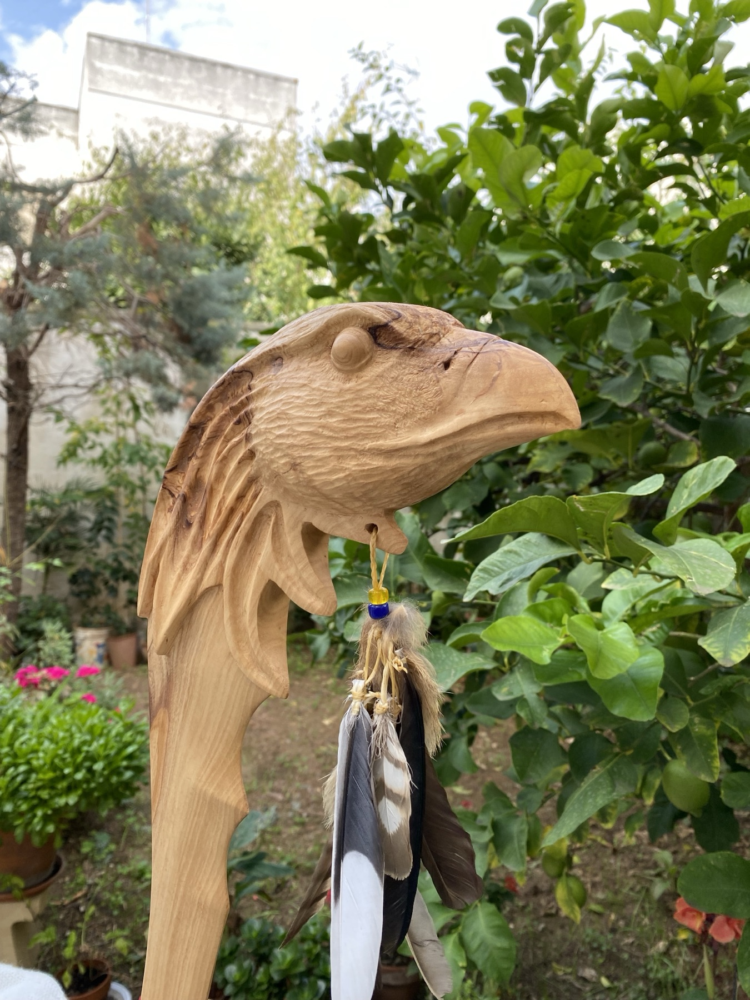
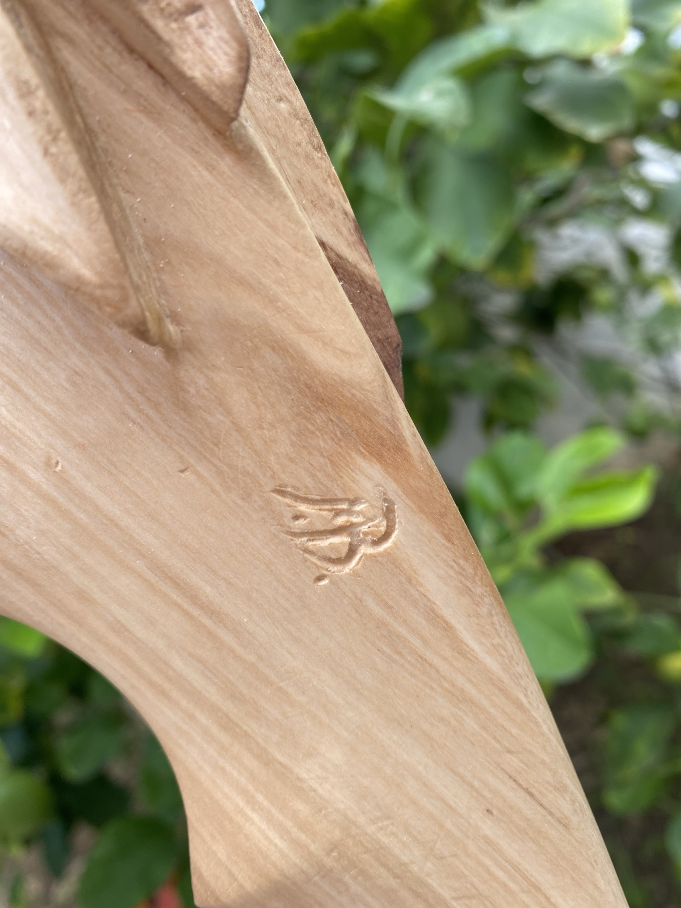
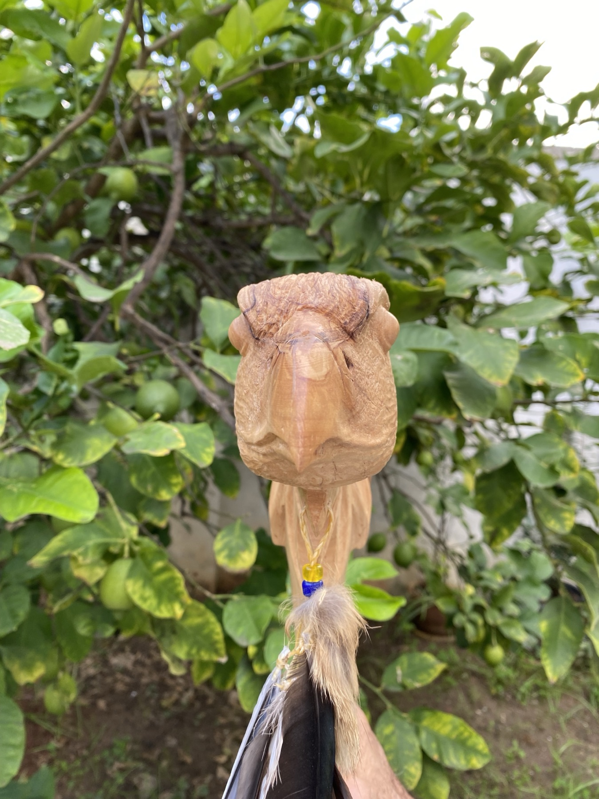
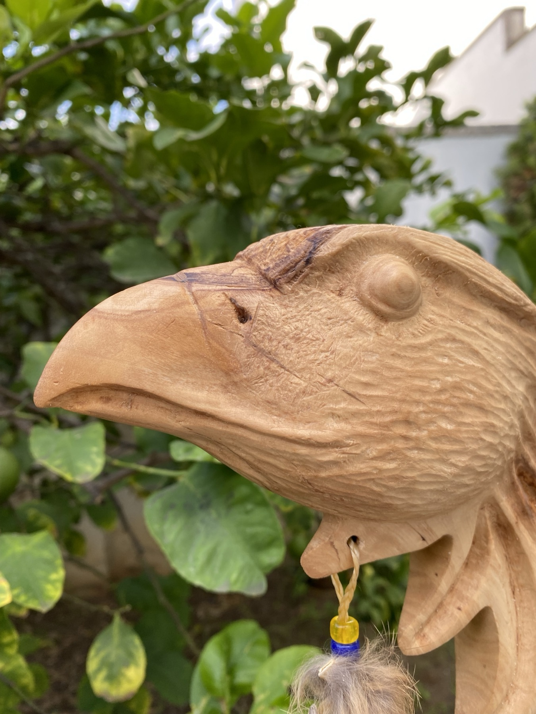
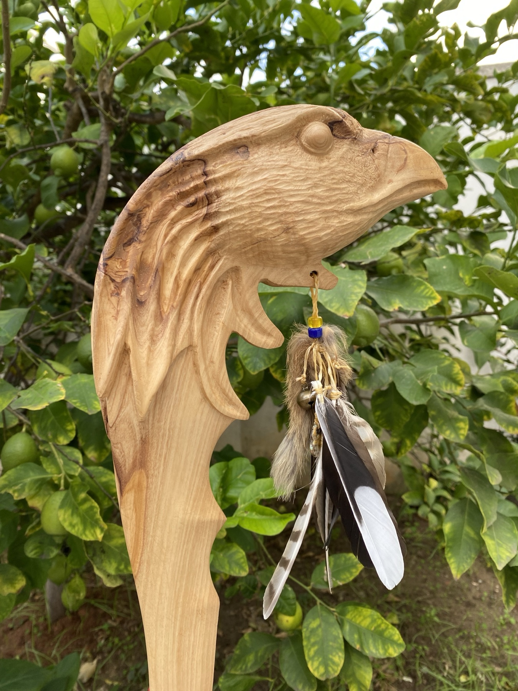
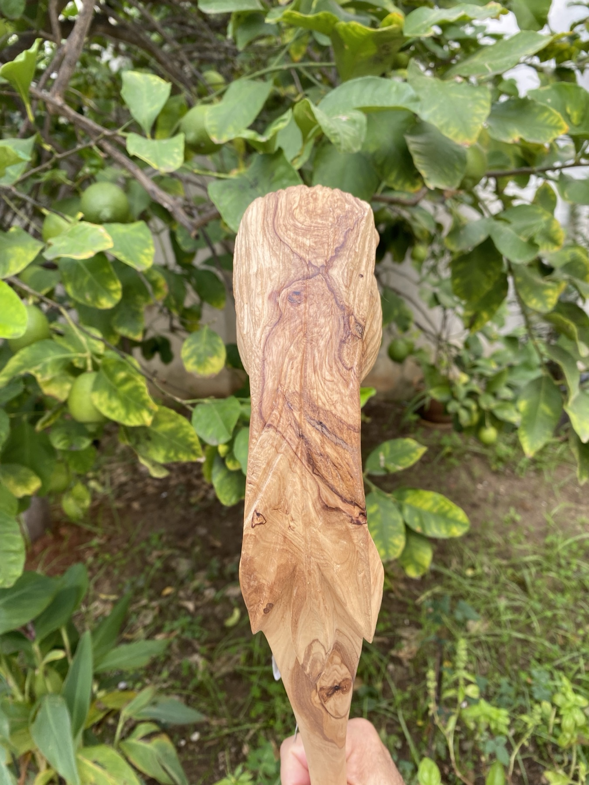
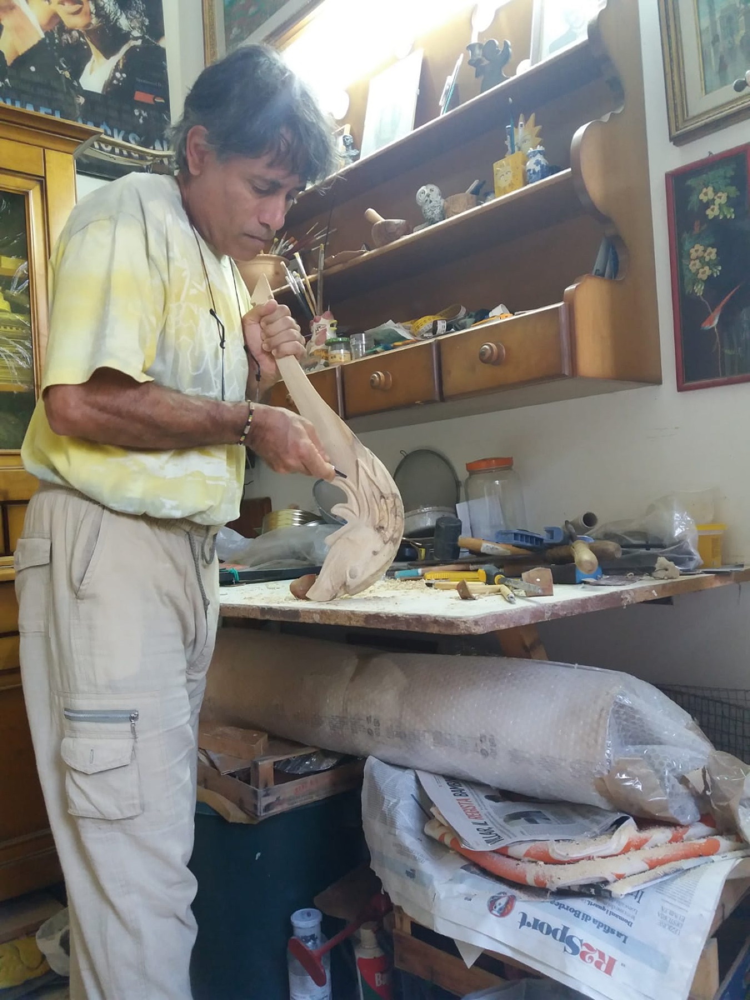
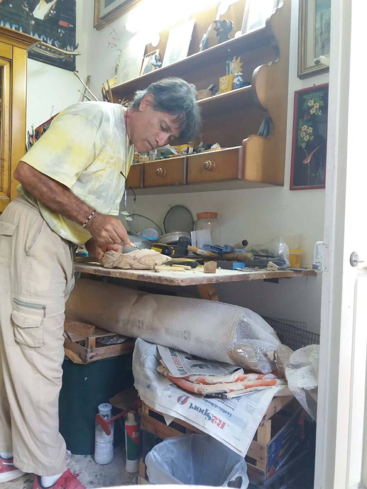

Diario · 30 ottobre 2021
Mazza da guerra indiana con Testa d’Aquila
Descrizione:
Ciao, amanti dell’arte!
Oggi vi parlo di questa mia nuova scultura, tirata fuori da un tronchetto di legno di Ulivo. Lavorandolo ho ricavato una mazza da guerra Indiana, con una particoare caratteristica…
Ho deciso di creare nella parte superiore dell’arma una testa di aquila. Dovete sapere che i nativi americani usavano molto rappresentare questo rapace dato che, per la loro cultura, era l’animale che rappresentava al meglio il potere del Grande Spirito.
Questa mia rappresentazione difatti non è del tutto irrealistica: ogni guerriero della tribù tendeva, infatti, a personalizzare le proprie armi con richiami al suo “credo”. Oltre ciò, si nota un amuleto al di sotto della testa del rapace. L’impugnatura è in pelle di cervo conciata. Infine il manico l’ho fatto terminare “a punta” sulla quale sono presenti delle zigrinature. In questo modo ho voluto rendere “letale” anche questa sezione della mazza.
Di seguito ti lascio alcune foto della scultura. Fammi sapere cosa ne pensi con un commento qua sotto! Oppure contattami se sei interessato all’acquisto di questo o di altri pezzi.







